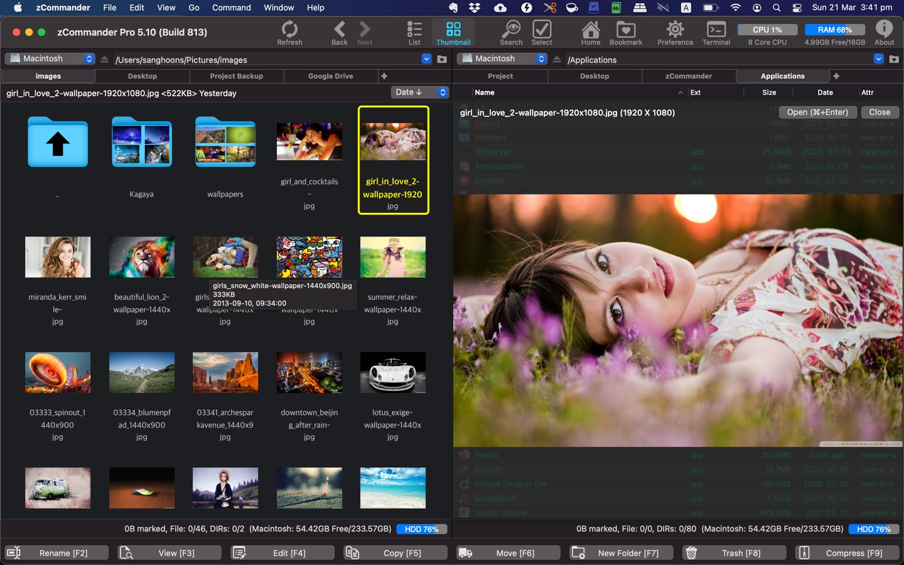
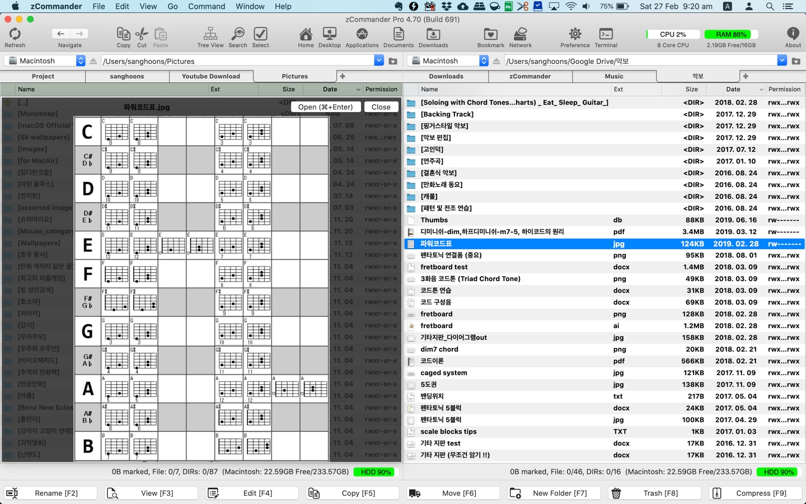
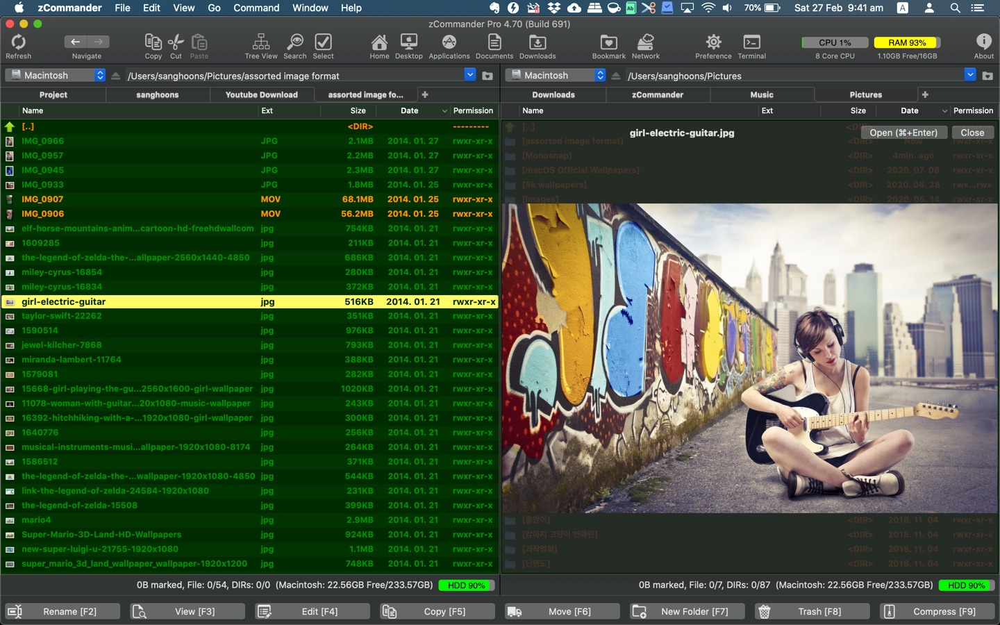

Navigate faster
Classic dual-pane layout with multiple tabs per pane, so source and destination stay visible while you work.
Mac App Store · Productivity
Advanced File Manager
A dual-pane Mac file manager for power users — tabs, speed, and keyboard-first workflows.

Built for people who outgrow Finder — dual panes, tabs, fast search, and file operations that keep pace with real work.
Classic dual-pane layout with multiple tabs per pane, so source and destination stay visible while you work.
Type-to-locate in the list, advanced filters, and content-based search — with full Korean language support for quick typing.
Multithreaded copy, move, and delete, plus built-in zip compress/extract, bookmarks, history, and Quick Look previews.
Interface
Switch between list and thumbnail views, apply color themes, and color-code file extensions so important files stand out at a glance.

File operations
File operations run with multithreading for speed. Preview almost any file with a click, use keyboard shortcuts or mouse actions, and keep frequent folders close with bookmarks and history.

Archives
Compress and extract archives directly in zCommander — useful when you are organizing media libraries or project folders.
Use dual panes and tabs to keep source and destination side by side.
Type to jump in the list, filter results, or search by content.
Copy, move, delete, zip, preview, or reveal in Finder — without breaking your flow.
Native macOS file manager by woojooin. Continuously updated for power-user workflows — dual panes, tabs, search, zip, and fast file operations.
I am the author and developer of zCommander for Mac. I design, ship, and maintain the product end to end — dual-pane UI, file operations, search, localization, and App Store releases.
Built as a native Mac app with Objective-C and Cocoa.